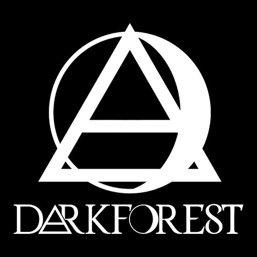

Bernardo, gracias por brindarnos esta entrevista. Tienes muchos años en la escena Techno, quisiéramos saber cómo sientes que ha ido evolucionando el público en el ambiente de la música electrónica. ¿Qué diferencias hay entre los primeros públicos para los que has tocado en los albores de la escena en tu país y el público actual?.
En primer lugar gracias también a vosotros, en cuanto a vuestra pregunta hay grandes diferencias, hace años la escena techno era toda una novedad para nosotros, no había redes sociales y todo era más emocionante y underground, actualmente todo va más rápido teniendo más visibilidad y oportunidades puesto que se ha profesionalizado todo, sigo viendo a un público muy entregado, pero a la vez veo a un público demasiado disperso mirando la pantalla del móvil en la pista.
¿Como DJ has ido evolucionando a través de los años y atravesando los distintos avances tecnológicos. ¿Cómo has vivido esa evolución? ¿Qué es lo que más ha cambiado de la profesión?
La verdad es que estoy muy contento con la evolución de la tecnología, durante muchos años he sido un gran defensor del vinilo en las cabinas, pero actualmente estoy muy cómodo trabajando con los reproductores digitales, me aportan y me dan mucha diversidad / juego en mis sesiones y una gran accesibilidad a encontrar más música en digital, así que básicamente solo ha cambiado el formato.
Es el año 2020, estamos atravesando una pandemia y una emergencia sanitaria mundial, ¿cómo crees que será el futuro de los clubs y de los eventos de música electrónica? ¿Hay algo positivo para sacar de esta situación?
Nunca he sido una persona optimista, pero tampoco demasiado pesimista, siempre he tenido mi equilibrio personal, se perfectamente que vamos a salir de esta situación y volveremos a disfrutar y bailar, el ocio es necesario y vital, pero tenemos que ser conscientes que la manera que teníamos de relacionarnos va a cambiar por un largo periodo de tiempo.
En 2016 lanzaste tu sello discográfico Dark Forest que ya cuenta con 20 referencias y artistas de todo el mundo. ¿Qué es lo que más te gusta de llevar adelante una etiqueta y cuáles son los planes futuros para el proyecto?
Es muy emocionante y una gran satisfacción a nivel personal, me agrada mucho la labor que desempeño y lo que conlleva dirigir una etiqueta de música electrónica, desde mis propias producciones a filtrar y seleccionar tracks de productores talentosos y sorprendentes que encajan perfectamente en la línea que quiero llevar, hay muchos proyectos novedosos y bastantes referencias en camino.
El catálogo de DarkForest ya cuenta con artistas latinoamericanos y de nuestro país, Argentina. A raíz de esto queríamos preguntarte ¿cómo ves la escena techno en nuestro país? Crees que hay talentos como productores de música techno?
La veo y la escucho bastante enérgica, muy profesional con futuro prometedor, me llegan semanalmente una cantidad considerable de referencias y demos de artistas muy jóvenes con un talento abrumador, suelo prestar atención a productores como Jose Monsalve, Johann Arty, Russ, Rhombic, Diofaro o Unstrvctured, que siguen y a la vez rompen patrones establecidos en el techno.
¿Qué DJs te han influenciado fuertemente en tu vida y cuáles son los DJs o productores de la actualidad que logran emocionarte?
Dave Clarke, es un artista muy ecléctico dentro del campo de la música electrónica y me satisface siempre verlo y escucharlo, en cuanto a productores hay muchos pero en referencia a vuestra pregunta Planetary assault Systems.
¿Cuál crees que ha sido tu mayor logro, hasta ahora, en tu carrera?
Tener mi propio sello y recibir feedbacks de casi todos los rincones del mundo alabando mi trabajo.
En todos tus años de carrera imaginamos que has vivido momentos graciosos o bizarros con el público o en alguna fiesta. Quisiéramos que nos cuentes alguna anécdota de este estilo que no hayas podido olvidar.
Uffff hay muchos! pero recuerdo una vez en un club pequeño de unas 200 personas, nada mas comenzar mi sesión a alguien se le ocurrió tirar unas bombitas fétidas en medio de la pista, la gente huía despavorida hacia el exterior del local por el fuerte olor, quedándose totalmente vacío, os podéis imaginar mi cara sin saber qué es lo que estaba ocurriendo, afortunadamente el olor desapareció rápido y pudimos disfrutar de la noche ...(risas)
¿Qué consejos le darías a los artistas que están empezando a meterse en este mundo y les gustaría hacer una carrera como DJ-Productor?
Plena dedicación, muchísima constancia, pies en el suelo y creer siempre en tu trabajo.
¿Más allá del sello, cuáles son tus planes a futuro como artista en general?
Tengo un proyecto bastante bonito en camino, un sello paralelo a DarkForest, alejándose íntegramente de la pista de baile, más experimental, totalmente ambient, enfocado para anuncios, videos artísticos y bandas sonoras, es complejo y hay que trabajar duro, pero como toto en la vida hay que apostar fuerte.
Acá sos un artista muy querido ¿te gustaría tener la posibilidad de presentarte en Buenos Aires?
Hay varios promotores que estaban interesados en llevarme, pero la Covid lo ha truncado todo, así que estoy seguro que cuando pase todo esto, será una satisfacción aterrizar en vuestro país y actuar para vosotros.
Bernardo, te agradecemos por tu tiempo y queremos felicitarte por el gran trabajo que has hecho a lo largo de tu carrera y en la actualidad, es un orgullo para nosotros tener el placer de contactarnos con artistas de tu talla.
Gracias por vuestro apoyo y darle más visibilidad a mi carrera, ha sido un enorme placer dialogar con vosotros.